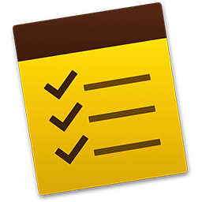

Freelancer is a free bootstrap theme created by Start Bootstrap. The download includes the complete source files including HTML, CSS, and JavaScript as well as optional LESS stylesheets for easy customization.
Whether you're a student looking to showcase your work, a professional looking to attract clients, or a graphic artist looking to share your projects, this template is the perfect starting point!